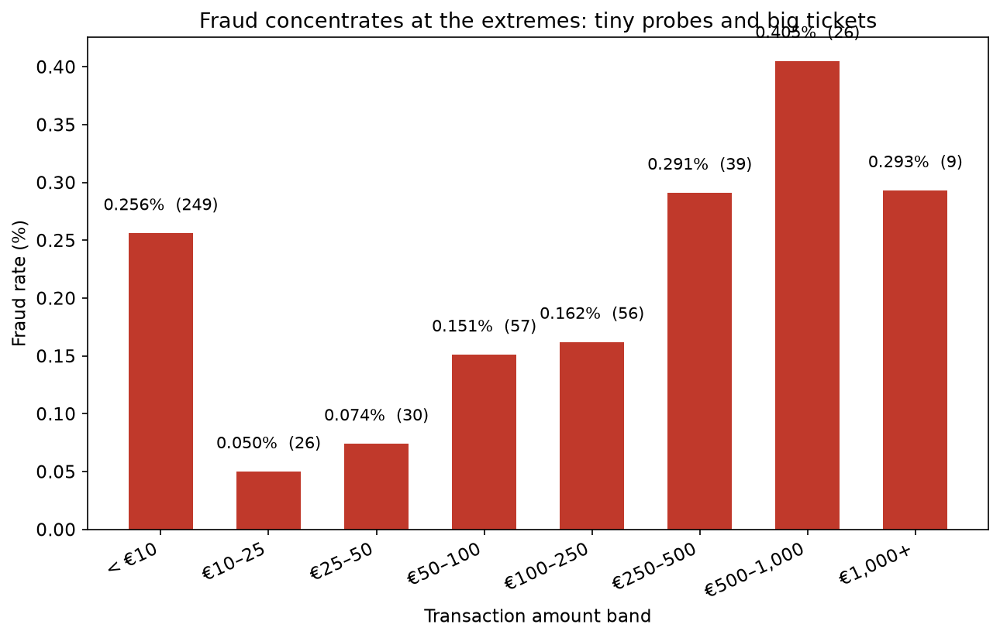
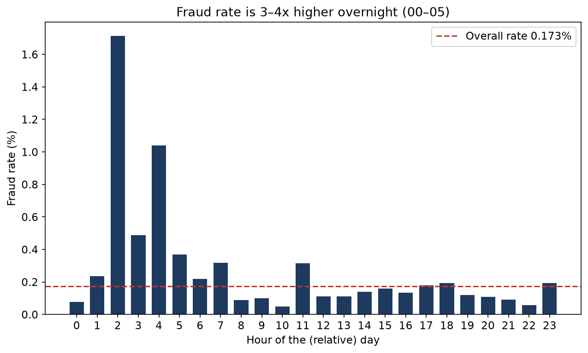
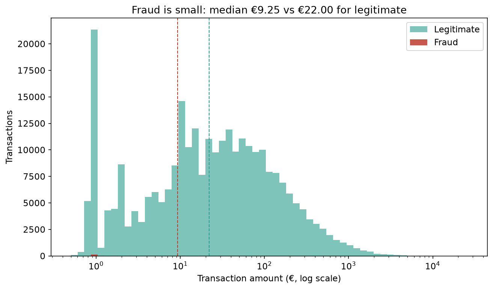
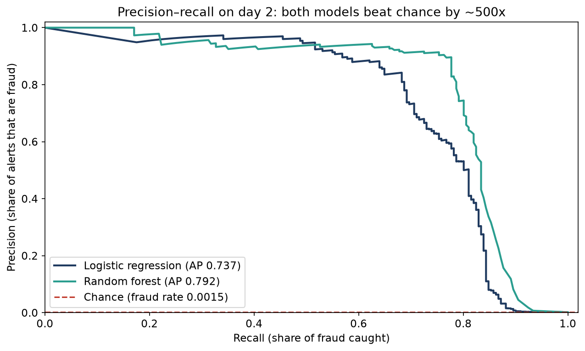
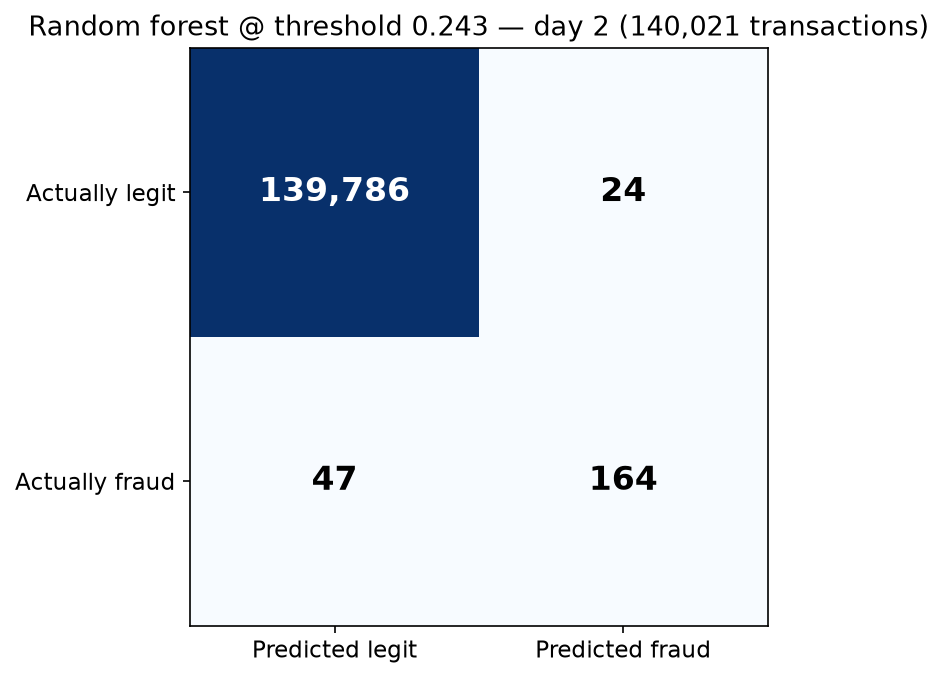
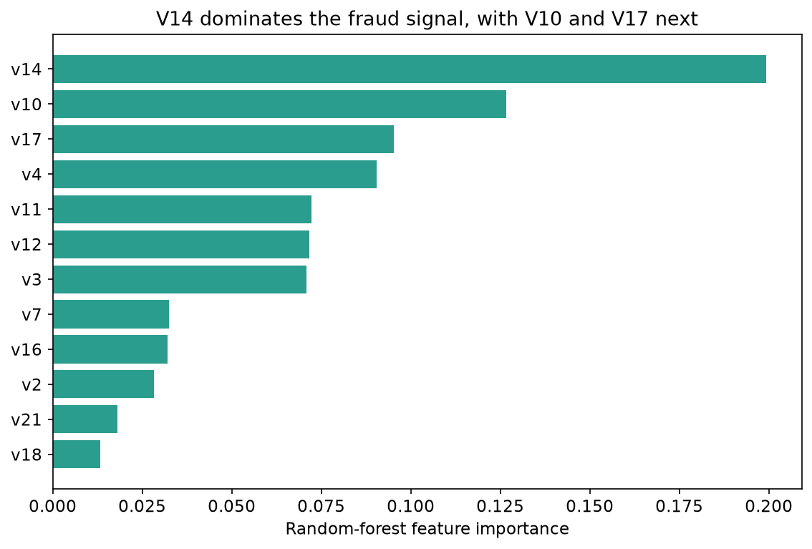

Fraud concentrates at the extremes: tiny probes and big tickets

Half of all frauds (249 of 492) are under €10 — small test purchases before the card is used for real — but they are worth only €459 in total. The highest fraud rate is the €500–1,000 band (0.405%). Amount alone cannot be the detector: the medians are €9.25 (fraud) vs €22.00 (legitimate) and the distributions overlap heavily.
Fraud is a night-time problem

Fraud rate 00–05 is 0.518% vs 0.124% in the evening — 4.2x higher. Hour 02 alone hits 1.71% (57 frauds in 3,328 transactions). Hours are relative to the first transaction in the file, not clock time — see notes/cleaning_notes.md.
Fraud is small — median €9.25 vs €22.00

Log-scale amount distribution. Fraud's mean (€122.21) is higher than legitimate (€88.29) only because of a few large frauds; the typical fraud is a small probe. A rule that blocks large amounts would miss most frauds and still flag thousands of good customers.
Precision–recall: the honest picture at 0.17% fraud

ROC-AUC flatters at this imbalance (0.94–0.96 for both models). Average precision is the metric that matters: random forest 0.79, logistic regression 0.74, against a 0.0015 chance baseline — roughly 500x better than guessing.
Model results on day 2 (140,021 transactions, 211 frauds, €26,889 of fraud)
| Model | Threshold | Precision | Recall | F1 | Alerts | False alerts | Fraud € caught |
|---|---|---|---|---|---|---|---|
| Random forest (tuned) | 0.243 | 0.872 | 0.777 | 0.822 | 188 | 24 | €17,233 (64.1%) |
| Logistic regression (tuned) | 1.000 | 0.644 | 0.730 | 0.684 | 239 | 85 | €15,950 (59.3%) |
| Logistic regression (0.50) | 0.50 | 0.037 | 0.872 | 0.072 | 4,929 | 4,745 | — |
| Random forest (0.50) | 0.50 | 0.932 | 0.654 | 0.769 | 148 | 10 | — |
| Predict all legitimate | — | — | 0.000 | — | 0 | 0 | €0 |
Thresholds are tuned on out-of-fold predictions from day 1 only, then applied untouched to day 2. The default 0.50 threshold is a disaster for logistic regression: 4,929 alerts, 96% of them false. Tuning the threshold is the single highest-value step in this project.

What it costs in euros (day 2, false alert = €15 of analyst time)
| Model | Fraud € caught | Fraud € missed | False alerts | Alert cost | Net benefit |
|---|---|---|---|---|---|
| Random forest | €17,233 | €9,656 | 24 | €360 | €16,873 |
| Logistic regression | €15,950 | €10,939 | 85 | €1,275 | €14,675 |
| No model | €0 | €26,889 | 0 | €0 | €0 |
€15 per false alert is an assumption for analyst review time; the real cost includes customer friction. Re-run the cost table with your own number before quoting savings — at €50 per alert the tuned threshold is too aggressive.
Which features carry the signal

V14 dominates (importance ~0.20), followed by V10 and V17. The same components have the largest standardised mean differences between fraud and legitimate (V14 Cohen's d = −2.26, V4 +2.01, V11 +1.88, V12 −1.87). V1–V28 are PCA components, so they carry signal but no business meaning — do not build a rule on "V14 is low" without the PCA pipeline behind it.
Recommendations
- Ship the random forest at the tuned threshold (0.24), not 0.50 — 188 alerts a day at this volume, 87% of them real fraud, 64% of fraud value caught. At 0.50 it catches less fraud (65% recall) for a similar alert count; logistic regression at 0.50 is unusable (4,929 alerts, 96% false).
- Score small transactions too. Half of all frauds are under €10. A minimum-amount floor for scoring would hand fraudsters a free testing ground.
- Tighten overnight (00–05 relative hours). Fraud rate is 4.2x the evening rate; route overnight transactions through the model first and hold the highest-risk ones for review.
- Retrain daily on a rolling window. Fraud patterns drift within hours; the random forest's F1 slips from 0.88 out-of-fold on day 1 to 0.82 on day 2. Never evaluate on a random split.
- Never report accuracy. "Predict everything legitimate" scores 99.85% and catches €0. Precision, recall, average precision and euros are the scoreboard.